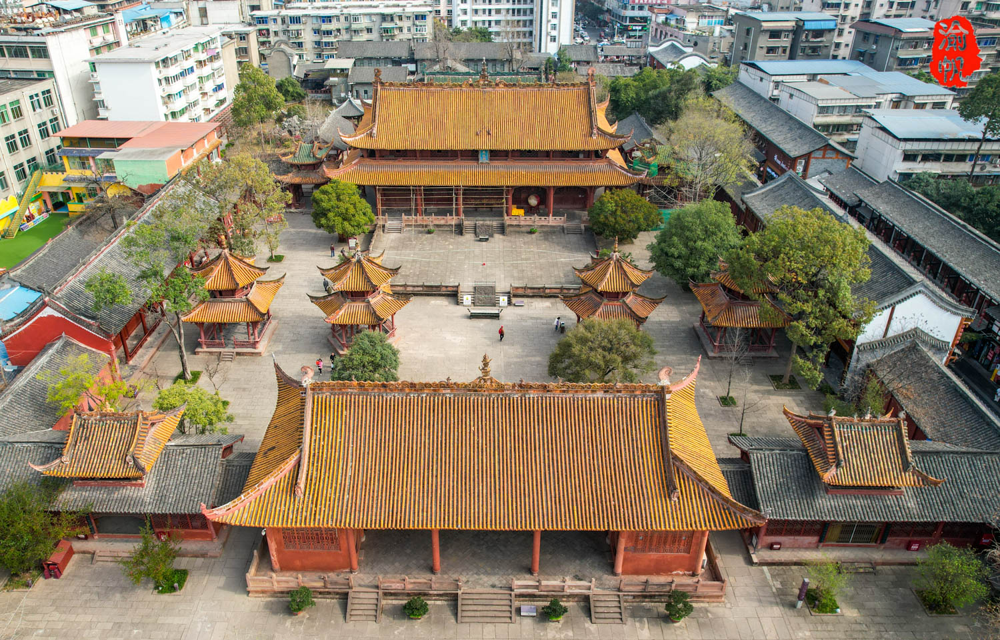
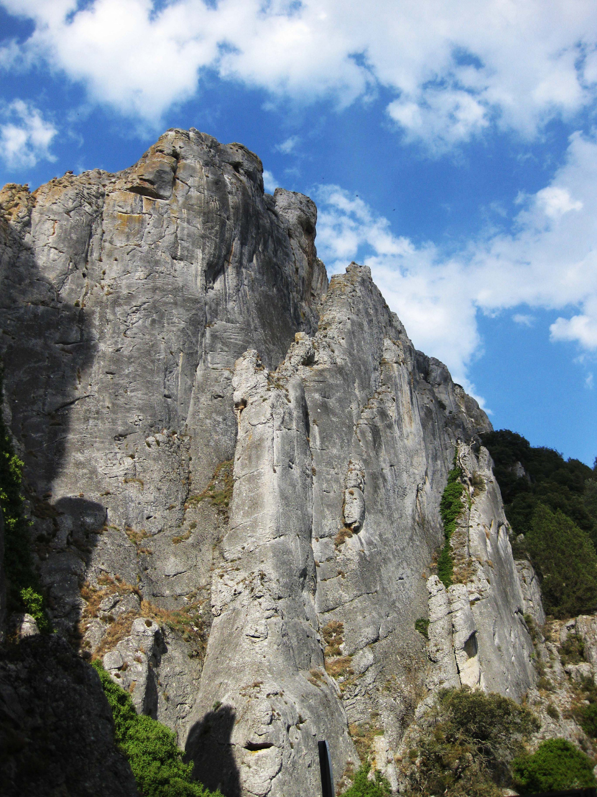
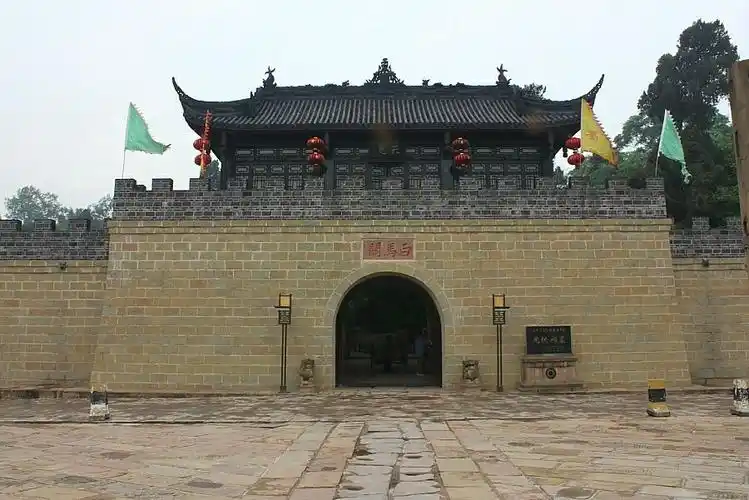
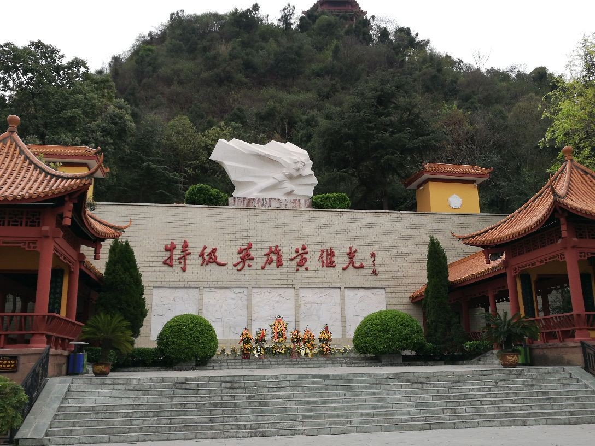
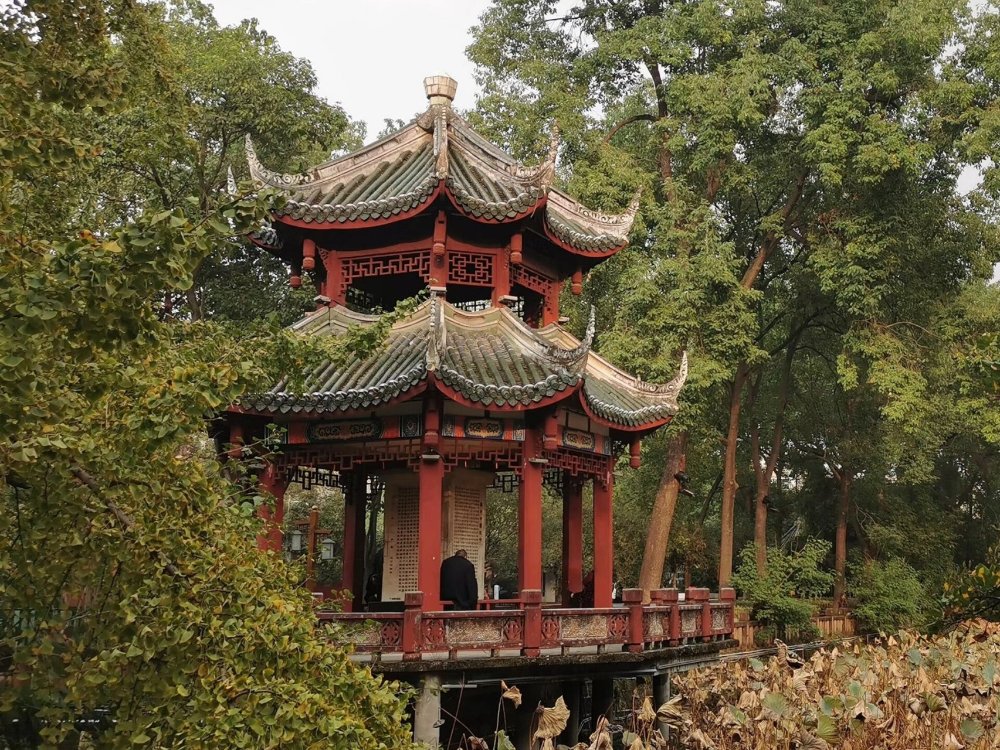
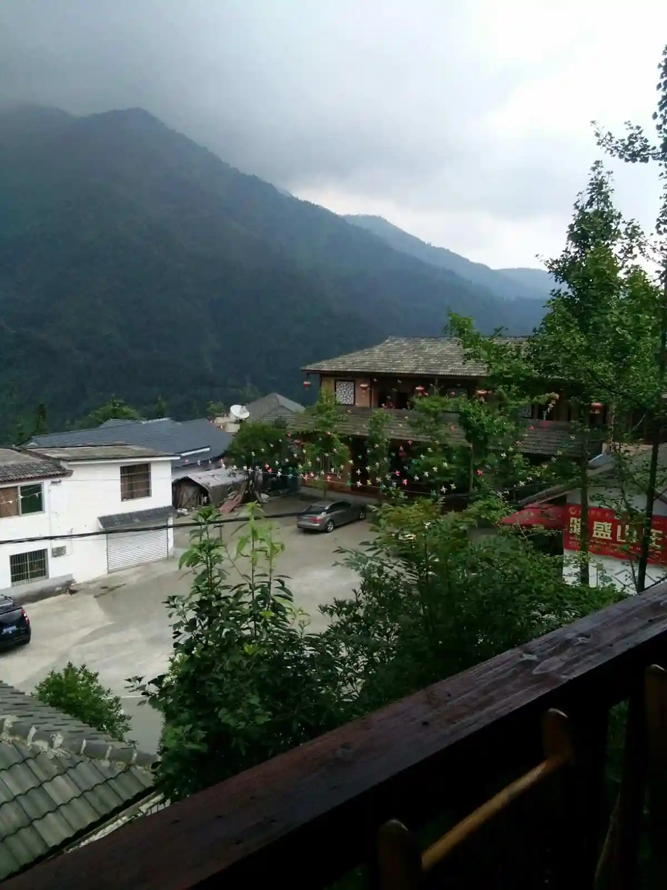

德阳热门景点
三星堆博物馆
三星堆博物馆是中国一座现代化的专题性遗址博物馆，位于德阳广汉市西北的鸭子河南岸。这里出土了大量造型奇特、风格迥异的青铜器、金器、玉器等文物，展示了古蜀文明的神秘与辉煌，是了解古代蜀地文化的重要窗口。

德阳孔庙
德阳孔庙是中国西部地区保存完整、规模宏大、具有浓郁地方特色的文庙建筑群。其建筑风格庄重典雅，红墙黄瓦，雕梁画栋，蕴含着深厚的儒家文化底蕴，是感受传统文化氛围的好去处。

蓥华山
蓥华山位于德阳什邡市西北，以其秀丽的自然风光和丰富的动植物资源而闻名。山上云雾缭绕，峰峦叠嶂，有清澈的溪流、壮观的瀑布等景观，是徒步旅行、登山探险爱好者的心仪之地。

罗江白马关
罗江白马关是德阳罗江区的重要景点，这里承载着丰富的三国文化底蕴。有关羽点将台等历史遗迹，古柏参天，氛围古朴而庄重，吸引着众多历史文化爱好者前来探寻三国往事。

中江黄继光纪念馆
中江黄继光纪念馆是为纪念特级英雄黄继光而建。馆内陈列着大量与黄继光相关的珍贵文物、史料及图片等，生动展现了黄继光英勇无畏的英雄事迹，是进行爱国主义教育的重要场所。

广汉房湖公园
广汉房湖公园是一座历史悠久、风景秀丽的公园。园内有湖水清澈的房湖，还有众多古建筑如棂星门等，兼具自然风光与人文景观，是市民休闲娱乐的好去处。

什邡红白镇
什邡红白镇地处山区，自然风光优美，有茂密的森林、清澈的溪流等。同时，这里也是地震灾后重建的典范区域，展现了坚韧不拔的抗震精神，吸引着不少游客前来感受自然与人文的魅力。